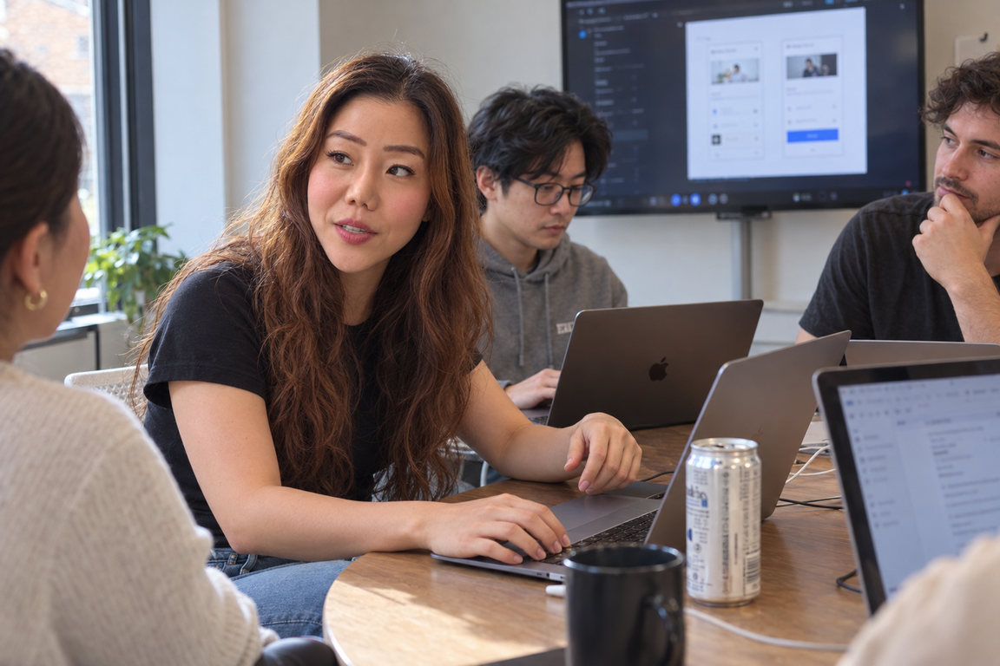

번역 중심 현지화
화면 문구는 영어로 바꿨지만 온보딩이 국내 사용자를 전제로 설계되어, 첫 사용자가 제품의 가치를 이해하지 못합니다.
처음 방문한 사용자가 가치를 이해하고 시작할 수 있는가?
Why Us
번역만으로는 제품이 현지에서 쓰이지 않습니다. 같은 제품도 시장과 사용자가 달라지면 일하는 방식, 제품을 이해하는 방식, 신뢰를 판단하는 기준이 함께 달라지고, 한국 시장에 맞춰 제품을 만들어 온 팀은 이 차이를 내부에서 발견하기 어렵습니다.

화면 문구는 영어로 바꿨지만 온보딩이 국내 사용자를 전제로 설계되어, 첫 사용자가 제품의 가치를 이해하지 못합니다.
처음 방문한 사용자가 가치를 이해하고 시작할 수 있는가?
핵심 워크플로가 현지 팀의 역할 분담과 승인 방식에 맞지 않아, 실제 업무에 쓰이지 않습니다.
핵심 업무 흐름이 목표 사용자의 실제 업무 방식에 맞는가?
메뉴 구조와 버튼 문구가 다음 행동을 분명하게 안내하지 못합니다.
화면의 구조와 문구가 다음 행동을 명확하게 안내하는가?
고칠 것이 많아 보이지만, 출시 전에 무엇부터 해야 할지 정하지 못합니다.
출시 전에 어떤 UX 문제부터 개선해야 하는가?
위 내용은 자주 나타나는 시행착오 유형을 설명하기 위한 예시입니다.

디자인은 화면을 만드는 데서 끝나지 않습니다. 설계 의도와 우선순위를 팀이 이해할 수 있는 말로 설명하고, 다음에 무엇을 할지 함께 정합니다.
회사의 배경과 Rachel이 맡은 역할을 나누어 적었습니다.
2025–2026
헬스케어 SaaS
2024
엔터프라이즈 모니터링
2019
제품 현지화
Services
팀에 필요한 범위로 함께합니다. 짧은 진단부터 제품 설계와 개발 협업까지, 현재 단계에 맞춰 시작할 수 있습니다.

예시 산출물 아래 화면은 서비스 결과물의 형태를 보여 주는 예시이며, 실제 프로젝트 결과가 아닙니다.
합의한 문제를 사용자 흐름과 화면으로 설계하고, 프로토타입과 개발 협업까지 이어갑니다. 디자인 의도와 요구사항, 고려할 예외 상황을 함께 정리해 구현 과정의 해석 차이를 줄입니다.
기본
입력 테두리는 배경과 3:1 이상
오류
색과 함께 문구로 원인 안내
비활성
왜 누를 수 없는지 함께 안내

Selected Work
Second Context를 시작하기 전, Rachel Cho가 이전 경력에서 수행한 세 프로젝트입니다. 고객사 이름은 밝히지 않습니다.
복잡한 자격 조건·일정 규칙·예외를 사용자가 이해하고 바로 행동할 수 있게 설계했습니다.
설계 설명을 위한 재구성
핵심 설계 판단 내부 규칙과 코드를 그대로 보여주는 대신, 예약 가능한 날짜를 보여주는 달력과 명확한 상태 표시로 다음 행동을 판단할 수 있게 했습니다.
5.8 에서 8.2
사용자 평가 파일럿에서 측정한 일정 계획 자신감
180초 에서 60초
업무 성과 여러 개선이 함께 적용된 후의 작업 시간
35% 감소
업무 성과 AI 보조 일정 워크플로에서의 수동 검증
3,000명 이상
도입 범위 AI 일정 추천 경험을 사용하는 임상의
많은 정보 속에서 심각도·영향 범위·조사 우선순위를 연결했습니다.
설계 설명을 위한 재구성
핵심 설계 판단 8개 대시보드에 흩어진 정보를 심각도와 후속 영향 중심으로 다시 구조화해, 무엇부터 조사할지 먼저 판단할 수 있게 했습니다.
30분 에서 3분
업무 성과 프로젝트에서 보고된 인시던트 조사 시간
80% 단축
업무 성과 의사결정 지원 흐름과 신호 표시를 다시 설계한 뒤의 인시던트 분류(triage) 시간
40% 단축
업무 성과 개발자 내부 도구의 티켓 처리 시간
언어와 사용 맥락에 맞춰 제품 경험을 조정했습니다.
설계 설명을 위한 재구성
핵심 설계 판단 번역된 문구에서 멈추지 않고, 이름·날짜·시간 표기와 타이포그래피·간격까지 한국어 사용 맥락에 맞춰 조정했습니다.
6주
프로젝트 기간 2019년, 제작 에이전시와 고객사의 한국·미국 팀이 함께한 현지화 기간
수치는 각 프로젝트에서 측정·보고된 값이며, 측정 방식은 프로젝트마다 다릅니다.

Founder
Second Context를 이끄는 제품·UX 컨설턴트 Rachel Cho입니다. Y Combinator 출신으로 1,420만 달러의 투자를 유치한 미국 헬스케어 스타트업에서 파운딩 디자이너로 제품 디자인을 이끌었습니다. 글로벌 기업의 업무 시스템과 제품 현지화 경험을 바탕으로, 복잡한 문제를 진단하고 개선 우선순위부터 실제 설계까지 연결합니다.
직접 학비를 마련하며 공부하고, 이민자로 새로운 언어와 문화 속에서 커리어를 쌓았습니다. 디지털 노매드로 여러 나라를 여행하며 서로 다른 배경과 관점을 이해해온 경험은, 제품이 쓰이는 맥락과 그 안의 사람을 살피는 바탕이 되었습니다.
지금은 제품팀과 파운더의 고민을 함께 풀며, 이민자 커뮤니티와 주니어 디자이너의 새로운 출발도 돕고 있습니다. ADPList 멘토링과 Flexwork Pro의 UX·AI 제품 디자인 강의를 통해 경험을 나누고, 막막한 상황에서도 실행 가능한 다음 걸음을 함께 찾습니다.
Contact
제품과 목표 시장, 현재 고민하고 계신 과제를 알려 주세요. 협업할 범위를 함께 살펴보겠습니다.